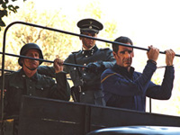
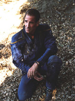
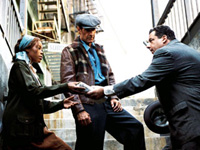
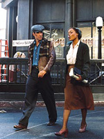
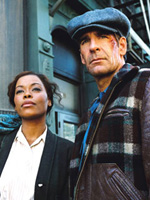
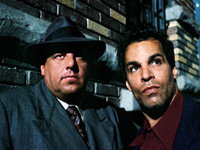
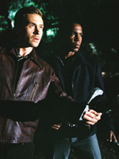
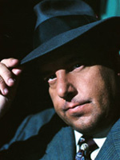

|
MANCHETE
DO EPISÓDIO
História
alternativa é foco do fim da Guerra Fria Temporal
Episódio
anterior | Próximo
episódio
Sinopse:
 Imediatamente
após o calor do momento em conseguirem resolver a ameaça Xindi, a
tripulação da Enterprise se vê com um novo problema, em
duas frentes. Primeiro, o shuttlepod enviado da nave para São
Francisco é interceptado por antigos P-51D americanos, e também
tiros de artilharia antiaérea, enquanto Archer surge em um hospital
de campanha alemão. Enquanto o Capitão da Enterprise era
conduzido em um comboio, grupos de resistência atacam, e resgatam o
prisioneiro do futuro. Entrementes, Trip, T'pol, Reed, Maywheather e
Hoshi deliberam sobre o fato de que eles voltaram no tempo até a década
de 1940, durante a Segunda Guerra Mundial.
Algum tempo
depois, dois inusitados oficiais alemães discutem a descoberta e
fuga de Archer em uma sala com equipamento avançado demais para os
padrões da época. Embora respectivamente com uniformes da
Wehrmacht e Gestapo, ambos são claramente aliens e deduzem que
Archer deve ser um humano do futuro, dado o equipamento que
encontraram com ele.
Mais tarde,
enquanto Trip se desculpava com T'pol por sua ríspida reação
inicial a nova situação em que se encontram, Reed adiciona
importante informação a respeito: segundo consta, há relatórios
sobre batalhas entre forças aliadas e alemãs nos estados
americanos de Virgínia e Ohio. Enquanto isto, um cambaleante e
deformado Daniels entra na enfermaria, para surpresa de Phlox.
 Archer acorda
sob os cuidados de Alicia, uma garota negra colaboradora da resistência
americana, que assume que, pelo patch no uniforme, Archer deva ser
um marinheiro sobrevivente do afundamento do Enterprise CV-6,
um dos porta-aviões americano da época. Archer ainda está bem
confuso, e joga com o que sabe pelo momento, e aprende da garota que
o ajuda, que estão em Nova Iorque, em 1944, o que também já serve
de alerta para Archer que está envolvido em algo a mais do que uma
mera volta no tempo.
Em uma
parcialmente danificada Casa Branca, dois oficiais alemães aliens
fazem um briefing para um terceiro, humano, sobre avançadas armas
de infantaria. Um dos aliens, Vosk, informa o General alemão que o
suprimento destas armas adicionais está na dependência de se
suprir fontes de energia adequadas para o modelo, e pelo diálogo,
aprendemos que os alemães sabem que tais aliens vieram do futuro,
pela maneira que ele descreve as necessidades da arma, e além
disto, pede uma lista considerável de suprimentos. O humano não
gosta de ter que desviar aquela quantidade de material do esforço
de guerra, que embora está indo bem, ainda está longe de ser
ganha. Demonstra um mapa, que mostra a área ocupada por forças
alemãs, todo o nordeste dos EUA, desde o Maine até onde o front
está, uma linha que segue por Ohio, as Virgínias e as Carolinas,
com unidades convergindo nas cidades de Columbus e Charlotte. O
oficial descreve que há concentrações de forças americanas
prontas para ofensivas, e que em outras frentes os esforços estão
sendo mais exigidos, como com os Russos tentando recapturar Moscou,
e até mesmo o Fuhrer está propenso a acreditar que a Alemanha pode
ter avançado rápido demais em uma linha longa demais de front.
Vosk descreve que a associação entre eles tem sido em benefício mútuo,
e que seria tolice negligenciar isto, ao que o oficial alemão acaba
aceitando.
 Phlox descreve
para T'pol que Daniels está com partes do corpo com diferentes
idades, desde criança até coisa de centenário, e que nada em
particular parece estar causando aquilo – o corpo dele
simplesmente está daquela forma. Quando ele recobra consciência,
informa T'pol que a Guerra Fria Temporal esquentou, e uma das facções
colocou agentes em campo na história da Terra para a alterarem
diretamente, e os paradoxos resultantes estão afetando a linha
temporal, a ponto de terem interferido na própria viagem dele ali,
daí seus ferimentos. Daniels diz para T'pol que precisam deter alguém,
mas Daniels desmaia novamente.
No Brooklin,
membros da resistência vão até onde Archer está escondido, e
informam que a Gestapo colocou um bom esforço em o encontrar. Um
deles, Sal, pressiona bastante Archer para saber qual seria a razão
de tanto interesse alemão, mas Archer usa o subterfúgio de "top-secret"
para se manter irredutível e assim não passar informações sobre
a real natureza de sua presença ali. Sal argumenta que com o irmão
dele preso, o risco de saberem que estão ali é alto, mas Alicia se
recusa a sair do apartamento. Durante um jantar, Archer aprende que
o marido de Alicia está servindo em um destróier no Pacífico,
onde a guerra também não anda lá estas coisas para o lado aliado,
e ela descreve incrédula um pouco de como teria sido o desembarque
alemão nos EUA. Archer pergunta para ela se Alicia conhece algo a
respeito de um oficial alemão que não parece ser humano, e a
hesitação da moça indica para o Capitão de que há mais a
respeito disto, e precisa falar com os contatos dela na resistência.
Enquanto conduz
mais reparos na ainda danificada Enterprise, Trip se depara
com ninguém menos do que Silik. O suliban ordena ao humano entrar
em um shuttlepod, e uma briga se inicia, com Silik acabando por
tontear o engenheiro. Silik escapa em um dos pods para a atmosfera,
antes que a Enterprise conseguisse o interceptar. A tripulação
especula que Daniels se referia a ele, e iniciam procedimentos para
o localizar.
 Voltando de um
encontro com um dos membros da resistência, Archer e Alicia se
deparam com problemas por alguns soldados alemães invocarem com
aquilo que parece ser um casal inter-racial. Apesar disto, conseguem
mais tarde encontrar com um informante, que após alguma persuasão
por parte de Sal e seu companheiro Carl, gangsters no pré-invasão,
os indicam para um encontro com um sujeito que vez e outra o
contata. Em um beco escuro, Archer e os demais conseguem render o
sujeito, Ghrath, da mesma espécie dos aliens oficiais alemães.
Archer e Ghrath dialogam sobre a guerra fria temporal, deixando os
Sal e os demais um tanto confusos, mas segundo o alien, estão
ajudando os alemães para obterem material para construírem um
conduíte para voltarem ao seu tempo, pois estão presos naquela época,
e Archer aprende também que a Enterprise está em órbita. A
conversa tem que acabar mais cedo por o grupo ouvir sirenes se
aproximando, mas não antes de Sal acabar matando Ghrath com três
tiros a queima-roupa.
Em um campo
fora da cidade, Trip e Maywheater se teleportam na localização que
triangularam do pouso de Silik, mas encontram apenas o shuttlepod,
danificado demais para levantar vôo no momento. Ambos tem que se
esconderem de um destacamento alemão que para na estrada para
investigar a estranha nave. Antes de finalmente serem rendidos, Trip
consegue ativar a autodestruição do pod.
Enquanto se
afastavam do local, Sal e os demais perguntam para Archer do que se
tratou a conversa, e Archer apenas confirma que o sujeito era um
alien – embora ele mesmo seja do norte do estado de Nova Iorque,
ao ser questionado se era também extraterrestre. Mas nisto, o grupo
se vê cercado por uma patrulha alemã no meio da escura rua à
noite, e um tiroteio se inicia. Sal é derrubado e Carl dá
cobertura para Alicia e Archer, que são cercados em um beco. Alicia
oferece resistência aos soldados alemães enquanto Archer tenta
contatar a Enterprise com um dispositivo que tirou do alien.
O destacamento alemão, liderado por Vosk, rende Archer e Alicia,
mas não antes de ambos serem teleportados pela Enterprise.
 Uma vez na
ponte, todos ficam aliviados de verem que Archer esta vivo, pois até
então não tinham indícios nenhum de seu Capitão. Archer troca
informações com T'pol, e aprende sobre a captura de Maywheater e
Trip. Archer encontra Daniels, e aprende que o líder dos aliens é
Vosk, um extremista que se opõe a qualquer acordo entre as facções
da guerra fria temporal. O grupo de Vosk conseguiu neutralizar o de
Daniels, e este arranjou para a Enterprise cair naquela época
pois é quando Vosk pode ser detido. Daniels confirma a informação
do alien que Vosk precisa construir seu conduíte de volta ali, e
com a tecnologia da década de 1940, o equipamento tem que ser
enorme e complicado. Antes de finalmente morrer, Daniels reforça a
Archer a necessidade de deter Vosk a todo custo naquela época, e
assim a Guerra Fria Temporal será completamente erradicada.
Encerramos a primeira parte com Vosk enviado Trip e Maywheater para
custódia e posterior interrogatório, e depois o alien inspeciona
de um balcão uma gigantesca instalação futurista.
Comentários:
Se tem um episódio de Enterprise que é difícil
de avaliar, ele se chama "Storm Front, Part I". Há
pelo menos três modos diferentes de encará-lo. O primeiro, e
talvez mais justo, seja pelo que ele é enquanto episódio, ou
seja, o que ele apresenta em seus 42 minutos. Por esse ponto de
vista, ele é sem dúvida um segmento com uma premissa
interessante e bem executada.
Ultimamente, no campo da literatura em especial, tem sido uma moda
interessante o desenvolvimento do que se convencionou chamar de
"história alternativa". O que teria acontecido se
Kennedy não tivesse sido assassinado? O que teria sido da
humanidade se os russos tivessem chegado à Lua? E se o Império
Romano não tivesse se destroçado? E por aí vai.
Mesmo Jornada nas Estrelas já teve seus momentos de
"história alternativa". O exemplo mais memorável é o
clássico "The City on the Edge of Forever", em
que o fato de McCoy voltar no tempo e salvar Edith Keeler permite
que a Alemanha vença a II Guerra Mundial. E, mais uma vez, este
período histórico recebe a atenção dos roteiristas em "Storm
Front, Part I".

Do ponto de vista da qualidade de "história
alternativa", o episódio é bem rico. Não se pode
questionar a criatividade de colocar os nazistas com um pé na América,
tendo ocupado inclusive a Casa Branca, e, num lance ainda mais
surpreendente, converter os gângsters dos anos 1930 em heróis, a
"resistência" à ocupação alemã. É fato que, se o
contexto é suficientemente rico, a caracterização individual
dos elementos não é lá essas coisas -- especialmente dos
nazistas, que são apresentados como vilões unidimensionais do
pior tipo. Ainda assim, dentro do que a história se propõe, eu não
estou entre os que sentem falta de nazistas intelectualmente mais
sofisticados do que os apresentados aqui. Então, sob esse
primeiro ponto de vista possível, "Storm Front, Part
I" é um bom episódio.
O segundo modo pelo qual se pode encarar o segmento é tentar
contextualizar esse segmento dentro do universo de Jornada nas
Estrelas. Aí, a coisa fica um pouco mais complicada. Não
pela premissa em si, mas pela forma de sua execução.
Tomemos de novo o exemplo máximo de "história
alternativa" em Jornada: "The City on the Edge
of Forever". Neste episódio, a aventura claramente é
toda centrada no desafio imposto a Kirk e Spock para evitar que o
futuro seja destruído. O contexto histórico é pouco relevante
no final das contas, é quase um artefato de roteiro para um drama
muito bem caracterizado e vivido pelos personagens. Essa é uma
história perfeita de Jornada nas Estrelas, que não se
esqueceu de que os protagonistas são os tripulantes da Enterprise.
Em "Storm Front, Part I", isso não acontece. O
contexto é tão destacado pelo roteiro e pela produção que os
personagens ficam quase esquecidos, sem nada interessante para
fazer. As imagens que ficam na cabeça são a da Casa Branca com
faixas decoradas com a suástica e os ataques dos aviões B-51 da
Força Aérea americana ao shuttlepod de Mayweather e Trip, logo
na abertura. Se fosse um episódio da série "Sliders",
seria excepcional. Como um de Jornada nas Estrelas, ele
deixa a desejar.

Uma terceira perspectiva possível é a de ver "Storm
Front, Part I" como uma continuação direta de "Zero
Hour", que criou o cliffhanger para esta história.
Mas encarar o episódio dessa maneira é ainda pior: não fica
claro como Daniels pode ter arrastado a Enterprise, de um lado,
para 1944, e Archer, de outro. Também não fica claro porque os
agentes temporais precisam dos tripulantes da NX-01 para fazer seu
serviço sujo, para começo de conversa. Não seria muito mais
saudável à linha temporal evitar envolver gente do século 22
nessa Guerra Fria Temporal que, para todos os efeitos, é travada
entre forças de séculos futuros -- ainda que o campo de batalha
seja todo o espaço-tempo?
Eu tenho a impressão de que seria mais prático e menos intrusivo
enviar dez "Daniels" para o século 20 e tentar impedir
Vosk e seus asseclas do que fazer uma tremenda força para
envolver Archer e seus comandados? Bem, não tenho a menor pretensão
de entender a lógica desses agentes temporais -- para mim, na
verdade, está claro que eles não têm uma lógica que seja lógica
--, então deixo só o pensamento jogado para o leitor.
Se você quiser, ainda é possível encarar o episódio de um
quarto ângulo: como a tão propagandeada conclusão para o
"arco" da Guerra Fria Temporal. Uso aspas para
"arco" porque a história acabou ficando sem pé nem
cabeça, e é bem difícil que sua conclusão possa sair algo
melhor do que isso.
De toda maneira, é um julgamento que terá de esperar por "Storm
Front, Part II". Silik está na Terra, com propósitos
desconhecidos, Archer se enturmou com os gângsters para combater
a ocupação nazista na América, Daniels morre na enfermaria
dizendo que a forma de acabar com toda a bagunça na linha do
tempo é destruir o artefato que Vosk está construindo com ajuda
alemã.

A julgar por essa primeira parte, o conselho ao telespectador é
tentar não se prender muito aos detalhes do enredo e encarar o
segmento como um entretenimento de ação descompromissado, cujo
objetivo é colocar um ponto final num conceito que parecia
promissor, mas jamais foi trabalhado com seriedade e
responsabilidade pelos produtores de Enterprise.
Erga as mãos para o céu: bem ou mal, em mais um episódio, acaba
a Guerra Fria Temporal.
Citações:
Phlox - "My singing would
often drive my children to tears."
("Minha cantoria normalmente faz meus filhos chorar.")
Archer - "Billie Holiday?"
("Billie Holiday?")
Alicia - "It's good to see you remember something."
("Bom saber que você ainda se lembra de algo.")
Vosk - "Imagine a plauge that would only target nonaryians?"
("Imagine uma epidemia que só afetaria não-arianos?")
Informante de Vosk - "I can't
shut up and talk at the same time."
("Eu não posso calar a boca e falar ao mesmo tempo.")
Trivia:
 O elenco convidado inclui Steve Schirripa, de "Os Sopranos".
O elenco convidado inclui Steve Schirripa, de "Os Sopranos".
É curioso observar que no mapa apresentado pelo General, o Canadá está
completamente ignorado pelas forças alemãs, embora ele fosse um ativo
país aliado no esforço de guerra, ao lado da Grã-Bretanha e outros.
Alicia acha curioso Archer se referir ao conflito como "Segunda
Guerra Mundial"; o termo ainda não havia se tornado corriqueiro
como "nome oficial" da guerra.
Ficha
técnica:
Escrito por Manny Coto
Direção de Allan Kroeker
Exibido em 08/10/2004
Produção: 077
Elenco:
Scott
Bakula como Jonathan Archer
Jolene Blalock como
T'Pol
John Billingsley
como Phlox
Anthony Montgomery
como Travis Mayweather
Connor Trinneer como
Charlie 'Trip' Tucker III
Dominic Keating como
Malcolm Reed
Linda Park como Hoshi Sato
Elenco convidado:
Golden
Brooks como Alicia
Jack Gwaltney como Vosk
John Fleck como Silik
Joe Maruzzo como Sal
Tom Wright como Ghrath
Matt Winston como Daniels
Christopher Neame
como General Alemã
Steven R. Schirripa
como Carmin
J. Paul Boehmer
como Oficial da SS
John Harnagel
como Joe Prazk
Sonny
Surowiec
como Soldado
Alemão
Sinopse, trivias e ficha
técnica por Leandro
M.Pinto
Episódio
anterior | Próximo
episódio
|